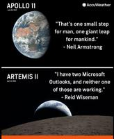

0



An anonymous reader quotes a report from NPR: Women in the U.S. gave birth to roughly 710,000 fewer children last year compared with the nation's peak in 2007, according to preliminary data released (PDF) this week by the Centers for Disease Control and Prevention. Lead researcher Brady Hamilton, a demographer with the CDC's National Center for Health Statistics, said the latest one percent drop in "general fertility" from 2024 to 2025 is part of a long-running downward trend. "Since 2007, there's been a decline in the general fertility rate [in the U.S.] of 23%," Hamilton told NPR.
The impact of that change in real numbers is sizable: In 2007, there were 4,316,233 babies born. Last year, even though the nation's population as a whole is larger, there were only 3,606,400 newborns. There's no consensus over why women and couples have shifted their behavior so significantly. Some experts point to economic factors, others say cultural influences, and better access to education and contraception for women are driving the change.
"We're seeing big drops in fertility rates for young women, teenagers and women in their 20s," said economist Martha Bailey, head of the California Center for Population Research at the University of California, Los Angeles. "What's not yet clear is whether or not those same women will go on to have children later on."
"People are having the number of children they want and that they can afford at a time that makes the most sense for them," she said. "What I don't think anyone is in favor of is a Handmaid's Tale type policy regime, where we're trying to talk families into having children they don't want."
One silver lining in the data is the 7% decline in teen pregnancies in 2025. Bianca Allison, pediatrician and associate professor at the University of North Carolina School of Medicine, said: "What is actually affecting the birth rates are likely lower rates of teen pregnancy overall, which is in the context of higher use of contraception and lower sexual activity for youth, and then also continued access to abortion care."
Read more of this story at Slashdot.
"One of VMware's biggest competitors, Nutanix, claims to have swiped tens of thousands of VMware customers," reports Ars Technica. They said higher prices, forced bundling, licensing changes, and more strained partner relationships have frustrated customers and driven them away from the leading virtualization firm. From the report: Speaking at a press briefing at Nutanix's .NEXT conference in Chicago this week, Nutanix CEO Rajiv Ramaswami said that "about 30,000 customers" have migrated from VMware to the rival platform, pointing to customer disapproval over Broadcom's VMware strategy, SDxCentral, a London-based IT publication, reported today. "I think there's no doubt that the customer sentiment continues to be negative about Broadcom," Ramaswami said, per SDxCentral.
Nutanix hasn't specified how many of the customers that it got from VMware are SMBs or enterprise-sized; although, adoption is said to be strongest among mid-market customers as Nutanix also tries wooing larger customers, often by starting with partial deployments. During this week's press briefing, Ramaswami reportedly said that some of the customers that moved from VMware to Nutanix during the latter's most recent fiscal quarter represented Nutanix's "strongest quarterly new logo additions in eight years." "Most of the logos came from our typical VMware migrations on to the [hyperconverged infrastructure] platform," he said.
During the Nutanix conference, Brandon Shaw, Nutanix VP and head of technology services, said that Western Union has been migrating from VMware to Nutanix for six months, The Register reported. The financial services company is moving 900 to 1,200 applications across 3,900 cores. Shaw said that Western Union has been exploring new IT suppliers to help it become more customer-focused. Despite Broadcom's history of "decent lines of communication" with Western Union, Shaw said that Western Union had "challenges partnering with them."
Shaw also pointed to Broadcom's efforts to push customers to buy the VMware Cloud Foundation (VCF), despite the product often having more features than companies need and at high prices. Since moving to Nutanix, the Denver-headquartered financial firm is also benefiting from having more flexibility around workload locations, which is important since Western Union is in over 200 countries, The Register said.
Read more of this story at Slashdot.
BrianFagioli writes: Mozilla is accusing Microsoft of stacking the deck against Firefox, arguing that design choices in Windows steer users toward Edge even when they explicitly choose another browser. According to Mozilla, parts of Windows still open links in Edge regardless of the default browser setting, including results from the taskbar search and links launched from apps like Outlook and Teams. Mozilla says this means Firefox often never even gets the opportunity to handle those links, which quietly shifts user activity back into Microsoft's ecosystem.
The company also points to Microsoft's aggressive rollout of Copilot as another example of platform power being used to push Microsoft services. Copilot appeared pinned to the taskbar, arrived automatically on many systems with Microsoft 365, and even received a dedicated keyboard key on some laptops. Mozilla argues that when the maker of the dominant desktop operating system promotes its own browser and AI tools at the system level, it becomes far harder for independent browsers like Firefox to compete.
Read more of this story at Slashdot.
Amazon CEO Andy Jassy says the company may eventually sell its Trainium AI chips directly to outside customers, not just through AWS, which would put Amazon in more direct competition with Nvidia. "There's so much demand for our chips that it's quite possible we'll sell racks of them to third parties in the future," Jassy wrote in his annual shareholder letter Thursday. He also revealed the company's chip business is already running at more than $20 billion annually, with demand so strong that current and even future generations are largely spoken for. Quartz reports: Access to Amazon's chips is currently limited to Amazon Web Services, with customers paying for cloud-based usage rather than owning any physical hardware. Selling to AWS and external customers alike, as standalone chipmakers do, would put annual revenue at around $50 billion, up from the $20 billion the company estimates for the year, Jassy said. The $20 billion figure spans three product lines: Trainium, the AI accelerator chip; Graviton, a general-purpose processor; and Nitro, a chip that helps run Amazon's EC2 server instances. All three are growing at triple-digit rates year over year, Jassy claimed in his letter.
Jassy said demand for Trainium has outpaced supply at each generation. Trainium2 is essentially unavailable, with its entire allocated capacity spoken for. Trainium3 started reaching customers in early 2026, and reservations have filled nearly all available supply. Even Trainium4 -- which is not expected to reach wide release for another year and a half -- has substantial pre-orders committed. Jassy argued that a full-scale Trainium rollout could shave tens of billions off annual capital costs while meaningfully widening profit margin.
Read more of this story at Slashdot.
OpenAI is reportedly preparing a new cybersecurity product for a small group of partners, out of concern that a broader rollout could wreak havoc if it were released more widely. If that move sounds familiar, it's because Anthropic took a similar limited-release approach with its Mythos model and Project Glasswing initiative. Axios reports: OpenAI introduced its "Trusted Access for Cyber" pilot program in February after rolling out GPT-5.3-Codex, the company's most cyber-capable reasoning model. Organizations in the invite-only program are given access to "even more cyber capable or permissive models to accelerate legitimate defensive work," according to a blog post. At the time, OpenAI committed $10 million in API credits to participants. [...]
Restricting the rollout of a new frontier model makes "more sense" if companies are concerned about models' ability to write new exploits -- rather than about their ability to find bugs in the first place, Stanislav Fort, CEO of security firm Aisle, told Axios. Staggering the release of new AI models looks a lot like how cybersecurity vendors currently handle the disclosure of security flaws in software, Lee added. "It's the same debate we've had for decades around responsible vulnerability disclosure," Lee said.
Read more of this story at Slashdot.
An anonymous reader quotes a report from CNN: A hacker has allegedly stolen a massive trove of sensitive data -- including highly classified defense documents and missile schematics -- from a state-run Chinese supercomputer in what could potentially constitute the largest known heist of data from China. The dataset, which allegedly contains more than 10 petabytes of sensitive information, is believed by experts to have been obtained from the National Supercomputing Center (NSCC) in Tianjin -- a centralized hub that provides infrastructure services for more than 6,000 clients across China, including advanced science and defense agencies.
Cyber experts who have spoken to the alleged hacker and reviewed samples of the stolen data they posted online say they appeared to gain entry to the massive computer with comparative ease and were able to siphon out huge amounts of data over the course of multiple months without being detected. An account calling itself FlamingChina posted a sample of the alleged dataset on an anonymous Telegram channel on February 6, claiming it contained "research across various fields including aerospace engineering, military research, bioinformatics, fusion simulation and more." The group alleges the information is linked to "top organizations" including the Aviation Industry Corporation of China, the Commercial Aircraft Corporation of China, and the National University of Defense Technology.
Cyber security experts who have reviewed the data say the group is offering a limited preview of the alleged dataset, for thousands of dollars, with full access priced at hundreds of thousands of dollars. Payment was requested in cryptocurrency. CNN cannot verify the origins of the alleged dataset and the claims made by FlamingChina, but spoke with multiple experts whose initial assessment of the leak indicated it was genuine. The alleged sample data appeared to include documents marked "secret" in Chinese, along with technical files, animated simulations and renderings of defense equipment including bombs and missiles.
Read more of this story at Slashdot.
After nearly 20 years on the platform, The Electronic Frontier Foundation (EFF) says it is leaving X. "This isn't a decision we made lightly, but it might be overdue," the digital rights group said. "The math hasn't worked out for a while now." From the report: We posted to Twitter (now known as X) five to ten times a day in 2018. Those tweets garnered somewhere between 50 and 100 million impressions per month. By 2024, our 2,500 X posts generated around 2 million impressions each month. Last year, our 1,500 posts earned roughly 13 million impressions for the entire year. To put it bluntly, an X post today receives less than 3% of the views a single tweet delivered seven years ago. [...]
When you go online, your rights should go with you. X is no longer where the fight is happening. The platform Musk took over was imperfect but impactful. What exists today is something else: diminished, and increasingly de minimis.
EFF takes on big fights, and we win. We do that by putting our time, skills, and our members' support where they will effect the most change. Right now, that means Bluesky, Mastodon, LinkedIn, Instagram, TikTok, Facebook, YouTube, and eff.org. We hope you follow us there and keep supporting the work we do. Our work protecting digital rights is needed more than ever before, and we're here to help you take back control.
Read more of this story at Slashdot.
An anonymous reader quotes a report from the Guardian: [Five skilled workers aged 50 and older spoke] to the Guardian about how, after struggling to find work in their fields, they have turned to an emerging and growing category of work: using their expertise to train artificial intelligence models. Known as data annotation, the work involves labeling and evaluating the information used to train AI models like Open AI's ChatGPT or Google's Gemini. A doctor, for example, might review how an AI model answers medical questions to flag incorrect or unsafe responses and suggest better ones, helping the system learn how to generate more accurate and reliable responses. The ultimate goal of training is to level up AI models until they're capable of doing a job as well as a human could -- meaning they could someday replace some of these human workers.
The companies behind AI training, such as Mercor, GlobalLogic, TEKsystems, micro1 and Alignerr, operate large contractor networks staffed by people like Ciriello. Their clients include tech giants like OpenAI, Google and Meta, academic researchers and industries including healthcare and finance. For experienced professionals, AI training contracts can be a side hustle -- or a temporary fallback following a layoff -- where top experts can, in some cases, earn over $180 an hour. But that's on the high end. For some older workers [...], it represents another thing entirely: a last refuge in a brutal job market that is harder to stay in, or re-enter, the older they get. For many of them, whether or not they're training their AI replacements in their professions is besides the point. They need the work now.
[...] "There's just a lot of desperation out there," Johnson said. As opportunities narrow, many turn to what Joanna Lahey, a professor at Texas A&M University who studies age discrimination and labor outcomes, calls "bridge jobs" -- lower-paying, less demanding roles that help workers stay financially afloat as they approach retirement. Historically, that meant taking temp assignments, retail and fast-food work and gig roles like Uber and food delivery. Now, for skilled workers -- engineers, lawyers, nurses or designers, for example -- using their expertise for AI data training is becoming the new bridge job. "[AI] training work may be better in some ways than those earlier alternatives," Lahey told the Guardian.
AI training can offer flexibility, quick income and intellectual engagement. But it's often a clear step down. Professionals in fields such as software development, medicine or finance typically earn six-figure salaries that come with benefits and paid leave, according to the US Bureau of Labor Statistics. According to online job postings, AI training gigs start at $20 an hour, with pay increasing to between $30 and $40 an hour. In some cases, AI trainers with coveted subject matter expertise can earn over $100 an hour. AI training is contract-based, though, meaning the pay and hours are unstable, and it often doesn't come with benefits.
Read more of this story at Slashdot.
A federal appeals court denied Anthropic's bid to temporarily block the Pentagon's blacklisting, meaning the company remains shut out of Defense Department contracts while the case continues, even though a separate court has allowed other federal agencies to keep using Claude for now. CNBC reports: "In our view, the equitable balance here cuts in favor of the government," the appeals court said in its decision. "On one side is a relatively contained risk of financial harm to a single private company. On the other side is judicial management of how, and through whom, the Department of War secures vital AI technology during an active military conflict. For that reason, we deny Anthropic's motion for a stay pending review on the merits." With the split decisions by the two courts, Anthropic is excluded from DOD contracts but is able to continue working with other government agencies while litigation plays out. Defense contractors will be prohibited from using Claude in their work with the agency, but they can use it for other cases.
[...] In the ruling on Wednesday, the court acknowledged that Anthropic "will likely suffer some degree of irreparable harm absent a stay," but that the company's interests "seem primarily financial in nature." While the company claimed the DOD was standing in the way of its right to free speech, "Anthropic does not show that its speech has been chilled during the pendency of this litigation," the order said. Because of the harm Anthropic is likely to suffer, the appeals court said "substantial expedition is warranted."
An Anthropic spokesperson said in a statement after the ruling that the company is "grateful the court recognized these issues need to be resolved quickly" and that it's "confident the courts will ultimately agree that these supply chain designations were unlawful." "While this case was necessary to protect Anthropic, our customers, and our partners, our focus remains on working productively with the government to ensure all Americans benefit from safe, reliable AI," Anthropic said.
Read more of this story at Slashdot.
The FBI says (PDF) Iran-linked hackers disrupted internet-connected systems used by U.S. oil, gas, and water companies. Even with the recent two-week ceasefire between Iran and the United States and Israel, hackers backing Tehran say they won't end their retaliatory cyberattacks. The Hill reports: The report warned that similar companies across the country should be aware of an increased push by hackers to take over programmable logic controller (PLC) systems, which can be used to digitally control physical machinery from remote locations. Secure internet access for PLCs from one company, Rockwell Automation, were removed by Iran-linked coders who then "maliciously interacted with project files and altered data," according to the report. Hackers first gained access to some of the platforms in January of last year. All access to compromised platforms ended in March, the report said. The FBI said the move resulted in "operational disruption" and "financial loss."
[...] Rockwell Automation wasn't the only company to recently face cyberattacks from Iran-linked hackers. Stryker, a major U.S. medical device maker, was targeted by Iran-affiliated coders in mid-March. It was unclear if physical operations were affected by the security breach. FBI Director Kash Patel was personally impacted by hackers who leaked his emails and records related to his personal travels and business from more than 10 years ago. [...]
The FBI urged companies to adopt network defenders and multifactor authentication to prevent future attacks. Tuesday's report was published alongside the National Security Agency, the Department of Energy, and the Cybersecurity and Infrastructure Security Agency. "Government and experts have been warning about internet connected systems for years, and how vulnerable they are," one source familiar with the federal investigation into the hacks told CNN. Many companies have "ealready removed those systems and followed the guidance," the person added.
Read more of this story at Slashdot.
BrianFagioli writes: Little Snitch, the well known macOS tool that shows which applications are connecting to the internet, is now being developed for Linux. The developer says the project started after experimenting with Linux and realizing how strange it felt not knowing what connections the system was making. Existing tools like OpenSnitch and various command line utilities exist, but none provided the same simple experience of seeing which process is connecting where and blocking it with a click. The Linux version uses eBPF for kernel level traffic interception, with core components written in Rust and a web based interface that can even monitor remote Linux servers.
During testing on Ubuntu, the developer noticed the system was relatively quiet on the network. Over the course of a week, only nine system processes made internet connections. By comparison, macOS reportedly showed more than one hundred processes communicating externally. Applications behave similarly across platforms though. Launching Firefox immediately triggered telemetry and advertising related connections, while LibreOffice made no network connections at all during testing. The early release is meant primarily as a transparency tool to show what software is doing on the network rather than a hardened security firewall.
Read more of this story at Slashdot.
An anonymous reader quotes a report from The Drive: Farmers have been fighting John Deere for years over the right to repair their equipment, and this week, they finally reached a landmark settlement. While the agricultural manufacturing giant pointed out in a statement that this is no admission of wrongdoing, it agreed to pay $99 million into a fund for farms and individuals who participated in a class action lawsuit. Specifically, that money is available to those involved who paid John Deere's authorized dealers for large equipment repairs from January 2018. This means that plaintiffs will recover somewhere between 26% and 53% of overcharge damages, according to one of the court documents (PDF) -- far beyond the typical amount, which lands between 5% and 15%.
The settlement also includes an agreement by Deere to provide "the digital tools required for the maintenance, diagnosis, and repair" of tractors, combines, and other machinery for 10 years. That part is crucial, as farmers previously resorted to hacking their own equipment's software just to get it up and running again. John Deere signed a memorandum of understanding in 2023 that partially addressed those concerns, providing third parties with the technology to diagnose and repair, as long as its intellectual property was safeguarded. Monday's settlement seems to represent a much stronger (and legally binding) step forward. The report notes that a judge's approval of the settlement is still required but likely to happen. John Deere also faces another lawsuit by the U.S. FTC, accusing the company of forcing farmers to use its authorized dealer network and driving up their costs for parts and repairs.
Read more of this story at Slashdot.
A $500,000 "Survivor"-style corporate retreat for 120 Plex employees in Honduras "turned into a week-long disaster involving illness, wild animals, armed guards, and employees stranded on a remote island," reports the Daily Beast. The CEO was bedridden by E. coli, staff were collapsing in brutal heat during Navy SEAL-led drills, there were fire ant attacks, uncooked food, and failing utilities. At one point, a porcupine even crashed through the ceiling of a guest's room. Here's an excerpt from the report: Tech media company Plex flew its 120 employees to a Honduran resort in 2017 for what was billed as a Survivor-style getaway. They called it "Plexcon." The first harbinger of trouble was an email that arrived before the group departed, informing them that the hotel manager and chef had both quit within days of each other. Things went sharply downhill from there.
CEO Keith Valory, 54, had flown out a day early, intending to channel his inner Jeff Probst and welcome his staff off the buses like a game show host. Instead, he spent the arrival morning flat on his back. "I got E. coli, which is maybe the worst thing you could get, possibly, ever," Valory told the Wall Street Journal this week. "Just as people were arriving on the buses, I was like, 'Uh oh.' I lost 8 or 10 pounds. They had a doctor come to me, which apparently is pretty standard. They nailed an IV bag to the bedpost."
With the CEO incapacitated, chief product officer and co-founder Scott Olechowski, 52, stepped in to run proceedings -- beginning with a forced eating challenge in which one employee had to consume a dead tarantula. [...] Sean Hoff, 42, founder of Moniker Partners, the independent retreat agency that planned the trip, was running himself ragged attempting damage control -- the showers, water, and electricity kept cutting out. [...] Meanwhile, senior software engineer Rick Phillips, 53, was trying to sleep when he heard a crash in his room. He ignored it until morning. "I got up and went over to get in the shower, and there was a porcupine," he said. "It must have climbed a tree and fallen through the ceiling."
Read more of this story at Slashdot.
Waymo is launching a pilot with cities and Google's Waze to share pothole data collected by its robotaxis, giving local transportation departments a new way to find and fix road damage more quickly. "We realized, hey, once we're at scale, we can actually share this data with cities, which is something that they've asked for and something that we collect at scale," said Arielle Fleisher, Waymo's policy development and research manager. "And so we figured out a way to make that happen." The Verge reports: Waymo uses its perception hardware, including cameras and radar, as well as accelerometers and the vehicle's physical feedback system, to log every pothole its vehicles encounter. These sensors detect physical changes to the road's surface, such as tilt and movement when the vehicle encounters irregularities. Originally, Waymo knew it needed the ability to detect potholes so it could ensure that its vehicles slowed down to avoid damage or injury to the passenger. Later, the company realized this could be invaluable data for cities, too.
Under the new pilot program, that data will now be made available to cities' departments of transportation through a free-to-use Waze for Cities platform, which provides access to real-time, user-generated traffic data that officials can then use to make important decisions -- such as pothole repair. The platform also allows for Waze users to validate pothole locations through their own observations, decreasing the chances that city officials will be led astray by false positives.
Currently, many cities rely on a patchwork of non-emergency 311 reports and manual inspections to address their pothole problems. Waymo developed this pilot program after collecting years of feedback from city officials about the state of their highways and surface streets. The company is launching the new pilot in the San Francisco Bay Area, as well as Los Angeles, Phoenix, Austin, and Atlanta, where Waymo says it has already helped the city identify approximately 500 potholes. Fleisher said that Waymo would be open to expanding the project to other street maladies based on further feedback from officials. The company is eager to learn what other types of street condition or safety data might be valuable, she said. "We want to be responsive to cities," Fleisher said. "They are interested in safer streets and potholes are really a tough challenge for cities. So we really wanted to meet that need as part of our desire to be a good partner and to ultimately advance our goal for safer streets."
Read more of this story at Slashdot.
Bloomberg's Mark Gurman says Apple's foldable iPhone is still "on track" for a September unveiling alongside the iPhone 18 Pro lineup. 9to5Mac reports: The report notes that Apple's stock took a hit earlier today after Nikkei Asia indicated the iPhone Fold was having serious production issues. Clearly, sources within Apple were motivated to share positive news via Gurman. Not long ago, Gurman himself said that he was expecting an iPhone Fold release date that was a little bit later than iPhone 18 Pro. That's still very possible, but it sounds like Apple is internally feeling optimistic about its targeted September launch.
The report continues: "While the complexity of the new display and materials may limit initial supply for several weeks, Apple is currently operating with a plan to put the device on sale around the same time -- or very soon after -- the new non-foldable models, the people said." Gurman adds an important qualifier: "Still, the release is six months away and production has yet to ramp up. That means the timing isn't final."
Read more of this story at Slashdot.
Financial Times : Sources: Alibaba appointed Cloud CTO Zhou Jingren to lead its AI unit after a pivot from open source to monetizable “MaaS” models led to Qwen exec departures — Move may affect a global developer community that relies on Qwen models from the Chinese company
Anna Tong / Forbes : AfterQuery, which sells coding and finance training data to AI labs, says it raised a $30M Series A at a $300M valuation, and has hit a $100M+ annual run rate — AfterQuery, which raised $30 million several months ago, competes with data labeling companies like Mercor to sell training data …
Seth Joseph / Forbes : Luminai, an AI-native platform for automating administrative healthcare workflows, raised a $38M Series B led by Peak XV, bringing its total funding to $60M — Cleveland, Ohio, USA - June 17, 2017: Daytime view of Cleveland Clinic main campus entrance reflecting pool near University Circle
Joe Rossignol / MacRumors : Apple is closing its Towson, Maryland store, the first US location where retail employees unionized; the union says it is “outraged” and exploring legal options — Apple today announced it will be permanently closing three retail stores in the U.S. in June, including Apple Trumbull in Trumbull …
Bloomberg : Sources: US Treasury Secretary Scott Bessent and Fed Chair Jerome Powell warned bank CEOs about Anthropic's Mythos model's risks at an urgent meeting Tuesday — Treasury Secretary Scott Bessent and Federal Reserve Chair Jerome Powell summoned Wall Street leaders to an urgent meeting on concerns …
Bloomberg : Alibaba led a ~$293M funding round for ShengShu, just two months after the creator of the Vidu AI video generator raised ~$88M — Alibaba Group Holding Ltd.'s cloud division led a 2 billion yuan ($293 million) funding round for ShengShu Technology, bolstering the war chest of a young contender in China's crowded AI video contest.
Cory Weinberg / The Information : Sources: SpaceX lost just under $5B last year while generating more than $18.5B in revenue; the loss figure includes xAI — SpaceX lost just under $5 billion last year while generating more than $18.5 billion in revenue, two people familiar with the figures said.
Reuters : Sources: Anthropic is weighing the possibility of designing its own chips, but it has yet to commit to a design or put together a dedicated team for the project — Artificial intelligence lab Anthropic is exploring the possibility of designing its own chips, three sources said …
Maxwell Zeff / Wired : How Black Forest Labs, a 70-person startup based in Germany, became a top competitor in AI image generation; sources: it recently declined to partner with xAI — Black Forest Labs has long punched above its weight in the AI image generation space. Its next move? Powering physical AI.
Financial Times : xAI has filed a lawsuit challenging Colorado's landmark AI anti-discrimination law, set to take effect in the summer, saying it violates free speech protections — Elon Musk's AI lab claims the regulations violate free speech protections — Elon Musk's xAI has filed a lawsuit challenging …
Andrej Karpathy / @karpathy : A gap in understanding AI is growing, as casual users cite flaws in old free models while power users point to new models' staggering gains in technical domains — Judging by my tl there is a growing gap in understanding of AI capability. The first issue I think is around recency and tier of use. I think a lot of people tried the free tier of ChatGPT somewhere last year and allowed it to inform their views on AI a little too much. This is
Shirin Ghaffary / Bloomberg : An OpenAI note to investors after Anthropic announced Mythos says OpenAI's early push to increase computing resources gives it a key advantage over Anthropic — OpenAI told investors this week that its early push to dramatically increase computing resources gives it a key advantage …
Jyoti Mann / The Information : Internal memo: Meta is pulling top engineers into its new Applied AI Engineering division, as part of a push to improve its models and “compete in the AI race” — Meta Platforms is pulling top engineers from across the company into its new Applied AI Engineering division …
Ashley Belanger / Ars Technica : An Ohio man is the first convicted under the Take It Down Act after pleading guilty to creating and sharing real and AI-generated explicit images of 10+ victims — An Ohio man became the first person convicted under the Take It Down Act after pleading guilty to creating and sharing both real …
Kenyatta Thomas / Electronic Frontier Foundation : EFF says it is leaving X, as “X is no longer where the fight is happening” and an X post now gets less than 3% of the views a tweet got seven years ago — After almost twenty years on the platform, EFF is logging off of X. This isn't a decision we made lightly, but it might be overdue.